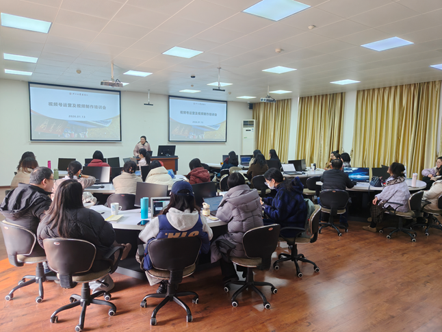

学院通知 · 教学通知
图书馆举行视频号运营及视频制作培训会
发布时间：2026-01-16 00:00:00
为加快推进图书馆新媒体工作的可视化转型，系统提升馆员视频内容创作与运营能力，1月13日，图书馆在工学图书馆202智慧教室举行“视频号运营及视频制作专题培训会”。本次培训由学习支持中心李晓蔚老师、研究发展中心朱珊珊老师主讲，分别围绕视频制作实务与视频号运营规范展开深入讲解。图书馆各中心（室）共33名老师参加培训，会议由图书馆党委副书记兼纪委书记、副馆长杜小军主持。 杜小军指出，图书馆开通视频号旨在更生动、直观地推广资源与服务，这对馆员的视频创作能力提出了新的要求。为此，图书馆“圕学讲习所”专门组织本次培训，希望通过系统学习，帮助馆员掌握实用技能，创作出内容优质、形式新颖的视听作品，进一步提升图书馆的宣传影响力与服务水平。 在视频制作培训环节，李晓蔚结合个人创作实例，系统介绍了短视频从策划到输出的全流程。她通过现场操作演示，详细讲解了常用剪辑软件的功能特点与操作技巧，涵盖素材整理、剪辑合成、特效转场、模板运用及成品导出等关键步骤。培训互动环节气氛热烈，馆员们围绕 AI 工具应用、视频转场、素材模板应用等问题积极提问，李老师逐一耐心解答，现场交流干货满满。 为进一步规范新媒体内容生产与发布，杜小军随后就视频制作与发布过程中的重要事项作了补充说明，重点强调了内容审核机制、意识形态把关、文字表述准确性与版权意识等关键环节，要求馆员执行相关制度，确保内容安全、质量过硬。 视频号运营部分，朱珊珊对照《四川大学图书馆官方微信视频号管理办法》，对视频发布标准、审核流程、评论互动管理等核心内容进行了讲解。随后，她以图书馆视频号后台为实操平台，逐步演示发布视频的具体操作，并同步说明各环节注意事项，使参训老师对视频号运营有了更直观、系统的认识。 此次培训内容详实、注重实操，有效增强了馆员利用新媒体开展宣传推广的能力。图书馆将以此次培训为契机，持续推动视频创作与用户服务、阅读推广、资源宣传等工作的深度融合，为馆内宣传推广工作注入新活力。 文：谭林 朱珊珊 李禾 图：谭林
